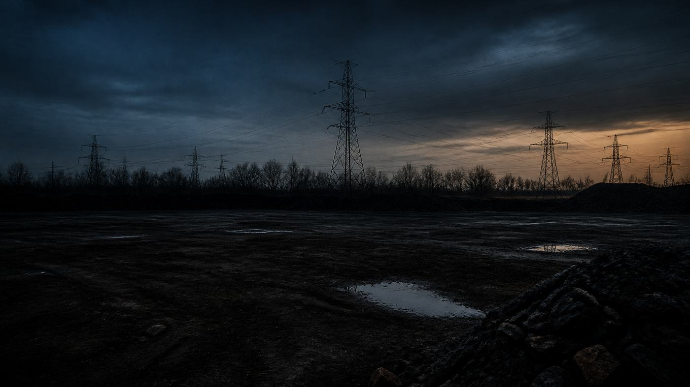

// Facilities
What actually decides a data center site
How power capacity, fiber routes, water, land and local politics narrow a long list of parcels down to the one or two that will work.

Most site searches start with a broker and a map of available parcels. That is backwards. The parcel is the last thing that matters. A site is a power problem, a fiber problem and a permitting problem wearing a real estate costume, and if you sort on price per acre you will end up under contract on land you cannot energize.
I have done this three times in Lansing, ground up, on the owner side. What follows is the order I would run it in and the questions that actually change the answer.
Power is the site
Start with the utility, not the listing. Two questions decide most of it: how much capacity is available at this point on the system today, and what does it cost and take to get more.
Those are different questions, and utilities answer them differently. A big line crossing the back of a parcel tells you nothing. Capacity lives in the substation transformer, the feeder breaker and the conductor, and any one of those can be the binding constraint. A subtransmission line running past the property is useless if the substation feeding it has no spare transformer capacity and the next upgrade sits in the utility's five-year plan.
Ask specifically:
- What is the available capacity at the nearest point of interconnection, in MW, today?
- Which substation serves it, how far away is it, and what is the transformer loading?
- Can I get two feeds from two different substations, or two feeders off the same bus?
- What is the historical outage record on those feeders?
- What is the lead time and cost for the next increment of capacity?
Distance to the substation drives the cost of the line extension and, at distribution voltage, the voltage drop and exposure you inherit. Every mile of overhead feeder is another mile of tree contact and vehicle strikes.
If your load is large enough, the answer may be that the utility builds new. On the largest of the three, an $80M facility, the utility constructed a substation to serve it. That changes the economics and the schedule of the entire project, and it is worth knowing early whether you are a line extension or a substation. Interconnection is a long enough subject that it deserves its own piece; treat the utility's study process as the critical path from day one, because it usually is.
Fiber, and how many carriers can actually reach the parcel
Economic development sheets like to count carriers. The number is almost always wrong, because it counts carriers present in the metro, not carriers with fiber that can reach your building on a route they own.
What you want is physical route diversity: two entrances on opposite sides of the building, into separate handholes, following paths that do not converge in a single conduit or share a single bridge crossing. Two carriers riding the same underlying dark fiber on the same route are one carrier with two invoices.
So ask for route maps, not carrier lists. Then check:
- How far is the nearest splice point or POP for each carrier, and is the path aerial or buried?
- Is there existing spare conduit in the road right of way, or does someone have to trench?
- Does the route cross a railroad, a river, a state highway or a municipal boundary? Railroad
crossings in particular can add months to a build, entirely on permitting.
- Who owns the last mile, and are they willing to sell an IRU rather than a lit service?
A parcel with one incumbent and no realistic second path is a parcel where you will be buying overpriced transport for a decade. If you plan to build your own ring to the local ILEC, walk the route before you sign anything.
The land itself
Buy more than you need. Build for phase one, buy for phase four. The things that eat land are not the data halls — they are the generator yard, the transformer and switchgear pads, the chiller or condenser yard, fuel storage with its containment, the loading dock and turning radius for a truck with a 2,500 kVA transformer on it, laydown space during construction, and stormwater retention. Then add the setbacks the zoning ordinance imposes on all of it.
Practical checks before you commit:
| Item | What to look for | Why it bites |
|---|---|---|
| Flood plain | FEMA mapping; stay out of the 100-year, prefer outside the 500-year | Insurance, financing and the fact that generators and switchgear live at grade |
| Soils | Borings before purchase, not after | Raised floor and heavy equipment loads; bad soils mean piles |
| Seismic | IBC seismic design category for the site | Drives anchorage and bracing of racks, tanks, piping and switchgear |
| Topography | Where does water go in a hard rain | Retention pond area comes out of your buildable acres |
| Adjacency | Rail, pipelines, fuel storage, airports, industrial neighbors | Risk analysis you will have to answer for in every customer audit |
Seismic barely registers in Michigan. It still shows up in the drawings, because the code assigns a design category to every site and that category drives how everything gets anchored.
Water, if you go evaporative
Evaporative and adiabatic cooling trade water for electricity. That trade is often a good one, but only if the water is actually there.
Find out the size and pressure of the nearest main, whether it is a looped main or a dead end, and what the municipality's position is on a large industrial draw. Then find out where the blowdown goes. Cooling tower blowdown is concentrated by whatever cycles of concentration you run, and the sanitary discharge permit will have limits on conductivity and on whatever chemistry you use for scale and biological control. Some municipalities meter the discharge separately and some assume sewer volume equals water volume, which you do not want when most of your water leaves as vapor.
Also ask what happens in a drought and whether the system has ever been under a use restriction. If you cannot get comfortable with any of that, you are designing around air-cooled chillers or DX, and you should know that before the mechanical concept is set rather than after.
Noise, generators, and the neighbors
Diesel standby plants are loud, and you have to run them. NFPA 110 calls for exercising the engine at least monthly for a minimum of 30 minutes, and you will also want annual load bank testing. That is a recurring, scheduled noise event on a site that may sit near residential property.
Two constraints to check before you buy:
Noise ordinance. Most municipal ordinances set a dBA limit measured at the property line, with a lower limit at night. Sound-attenuated enclosures and exhaust silencers will get you there, but they cost money, they add exhaust backpressure the engine manufacturer has to bless, and they take up space. Better to know the number before you size the yard.
Air permitting. Under EPA's standards for stationary compression ignition engines in 40 CFR Part 60, subpart IIII, an emergency engine may be operated for maintenance and testing for a maximum of 100 hours per calendar year, with no time limit on genuine emergency operation. That is enough for monthly exercise and load bank testing on a normal plant, but it is a real ceiling, and how your state agency treats aggregate site emissions determines what kind of permit you need and how long it takes.
Incentives, and the township
Michigan has had a sales and use tax exemption for data center equipment since Public Acts 251 and 252 of 2015, with eligibility conditions attached to how the facility is used and who the customers are. Whatever your state's version is, read the statute, not the brochure, and get your tax counsel to confirm you qualify before you underwrite it. Abatements on real and personal property are usually local and discretionary, which means they come with conditions and a clawback.
Which brings up the part that kills projects. It is not engineering. It is the planning commission.
Site plan review, a special use permit, a rezoning, a public hearing where somebody stands up and says the word "generator" — that process has its own clock and its own politics, and it is indifferent to your construction schedule. The failure mode is showing up with a signed purchase agreement and a design already committed, because now you have no leverage and no ability to change the thing they object to.
Go see the township early. Bring the site plan, bring the noise study, and be straight about the generators and the truck traffic. Option the land with an entitlements contingency rather than buying it outright. And find out who on the board has an opinion about industrial development before the first hearing, not during it.
The order that works
Power availability, then fiber routes, then entitlements, then land price. If a parcel fails on power, nothing downstream can save it. If it fails on fiber, you can sometimes buy your way out, and you should price that before you decide. If it fails at the township, you will find out slowly and expensively.
The single most useful thing you can do in the first two weeks is get a real conversation with the utility's key accounts group and a real route map from two carriers. Everything else is negotiable.